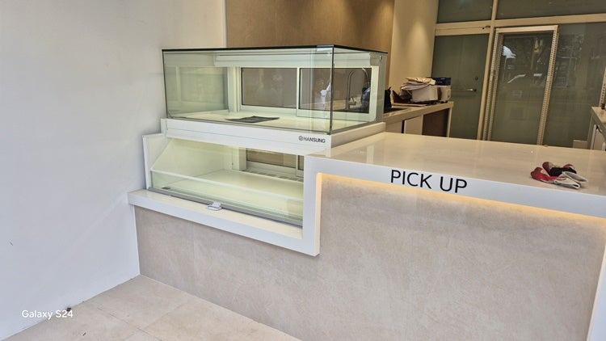
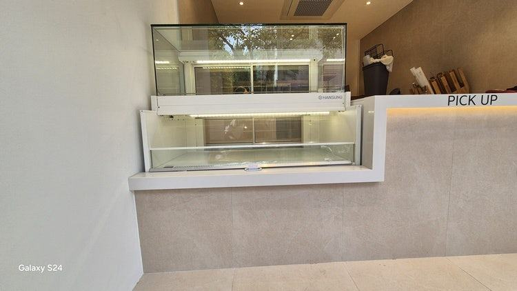
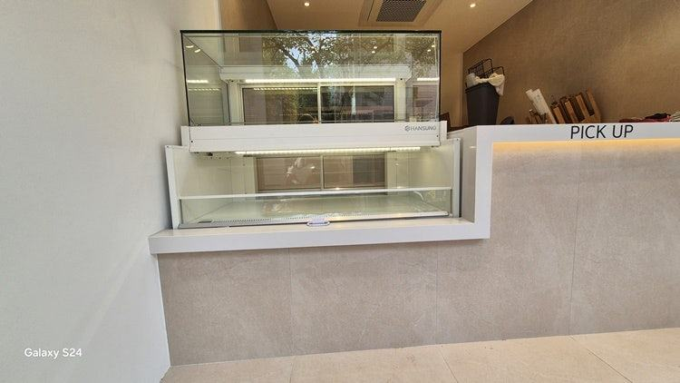
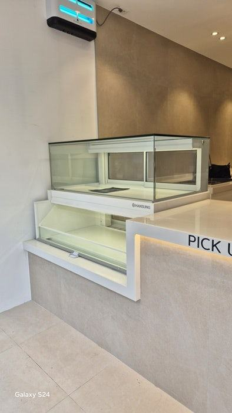
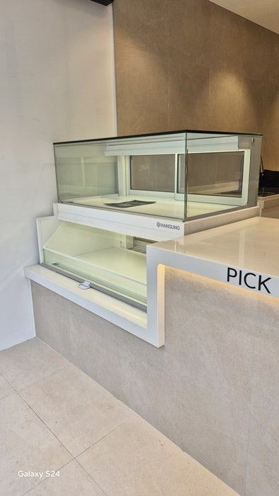
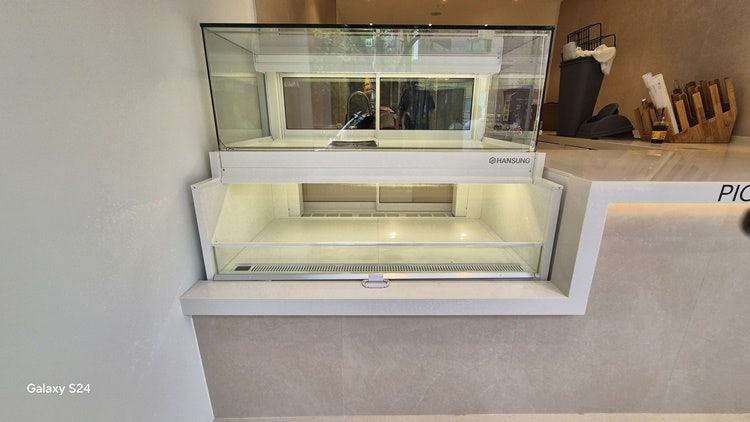
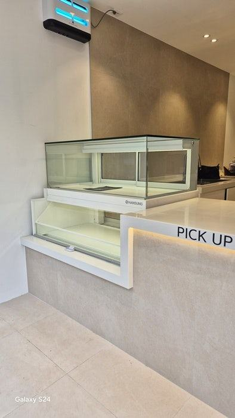
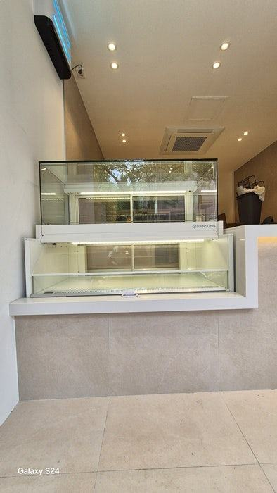
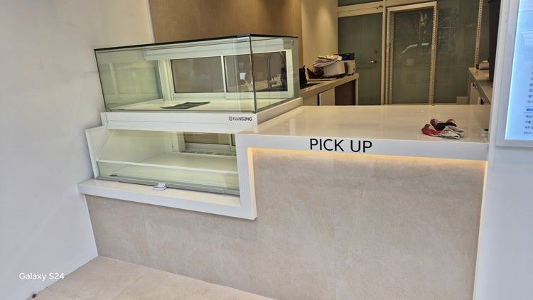
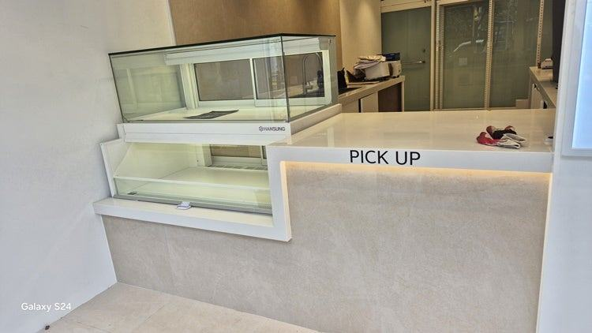

쇼케이스 이용 및 관리
간냉식쇼케이스 직냉식쇼케이스 차이, 업종별 고르는 기준

직냉식은 차가운 벽면으로 직접 식히는 방식이라 구조가 단순하고 수분이 덜 빠지지만 성에가 생겨 주기적으로 녹여야 하고, 간냉식은 팬으로 찬 바람을 돌려 온도가 고르고 성에가 자동으로 정리되지만 바람에 상품이 마를 수 있습니다. 문을 자주 열고 진열 효과가 중요한 매장은 간냉식, 보관 위주이고 수분 유지가 중요하면 직냉식이 맞습니다.
안녕하세요. 업소용 냉장 쇼케이스를 설계부터 제작까지 하는 한성쇼케이스입니다.
견적서를 받아 보신 사장님들이 자주 물으시는 게 있습니다. "간냉식이랑 직냉식이 뭐가 다른데 가격이 이렇게 차이 나요?" 용어부터 생소하니 그냥 싼 쪽을 고르셨다가, 여름에 성에 때문에 영업 중 전원을 끄고 얼음을 깨는 일을 겪으시기도 합니다.
반대로 비싼 간냉식을 골랐는데 상품 표면이 자꾸 마른다는 고민도 있습니다. 두 방식은 우열의 문제가 아니라 맞는 매장이 다른 문제입니다.
오늘은 간냉식쇼케이스와 직냉식쇼케이스가 어떻게 다른지, 내 매장에는 어느 쪽이 맞는지 판단하는 기준을 정리해 드리겠습니다.
1. 냉기를 전하는 방식의 차이
직냉식은 냉각 파이프가 내부 벽면을 직접 차갑게 만들어 그 냉기로 상품을 식힙니다. 바람이 없으니 상품 수분이 덜 빠지는 대신, 차가운 벽면에 성에가 쌓이고 벽에서 먼 곳과 가까운 곳의 온도 차가 생기기 쉽습니다.
간냉식은 별도 공간에서 만든 찬 공기를 팬으로 내부에 돌립니다. 내부 전체 온도가 고르고 문을 연 뒤 온도가 빨리 회복되며, 성에는 자동 제상으로 정리됩니다.
대신 부품이 많아 구조가 복잡하고, 찬 바람이 상품에 직접 닿으면 표면이 마를 수 있습니다.
2. 성에와 유리 김
직냉식은 성에가 쌓이면 냉각 효율이 떨어지기 때문에 주기적으로 전원을 끄고 녹여야 합니다. 영업 시간이 긴 매장이라면 이 작업 시간을 따로 잡아야 하죠.
손님에게 보여 주는 진열장이라면 유리 김도 중요합니다. 간냉식은 내부 공기가 고르게 돌아 유리에 성에가 덜 끼고, 여기에 히팅 유리를 더하면 손님 시야가 깨끗하게 유지됩니다.
진열 효과가 매출과 직결되는 카페·디저트 매장에서 간냉식을 많이 고르는 이유입니다.
- 영업 중 성에 제거 시간을 낼 수 있는지 생각해 보세요.
- 손님 쪽 유리가 히팅 유리인지 확인하세요.


3. 업종별로 맞는 방식
편의점·카페 음료 쇼케이스, 디저트·베이커리 진열장처럼 손님 앞에서 문을 자주 열고 보여 주는 장비는 간냉식이 잘 맞습니다.
온도 회복이 빠르고 위치별 편차가 적어 앞줄 상품까지 상태가 고르게 유지됩니다.
소규모 식당의 보조 냉장고나 채소·과일 보관처럼 문을 덜 열고 수분 유지가 중요한 용도라면 직냉식이 합리적인 선택일 수 있습니다.
구조가 단순해 수리도 비교적 쉽습니다.
- 하루 문 여는 빈도를 대략 세어 보세요.
- 진열 상품이 건조에 예민한지 확인하세요.
4. 간냉식에서 건조를 줄이는 방법
간냉식을 고르셨다면 찬 바람이 상품에 직접 닿지 않도록 설계됐는지 보세요. 냉기가 뒷벽 전체에서 고르게 나오거나 바닥에서 올라오는 구조, 바람길을 막지 않는 선반 구성은 상품 건조를 줄여 줍니다.
운영에서도 바람이 나오는 구멍 바로 앞에 랩을 씌우지 않은 디저트를 두지 않는 것만으로 차이가 납니다.
건조에 예민한 상품은 칸 안쪽보다 바람이 덜 닿는 위치로 옮겨 보세요.
체크리스트
- 하루 문 여는 빈도와 진열 목적
- 성에 제거 작업 가능 여부
- 상품의 건조 민감도
- 손님 쪽 유리 결로 방지 사양
- 냉기 토출 위치와 선반 구성
간냉 구조로 상·하단을 나눈 블루샥 콤비 쇼케이스
커피 프랜차이즈 블루샥 매장에 납품한 콤비 제과 쇼케이스입니다. 상단은 습도 조절이 중요한 제과·디저트를 위한 밀폐형, 하단은 샌드위치와 음료, MD 상품을 손님이 바로 집는 오픈형으로 나눠 한 자리에서 두 대 역할을 하도록 했습니다.
픽업대와 자연스럽게 이어지도록 단차를 계산해 설계했습니다.
케이크 시트가 마르거나 생크림이 녹지 않도록 냉기가 한쪽에 쏠리지 않고 내부 전체를 감싸 순환하는 구성을 갖췄고, 히팅 유리와 바닥 쿨러, 저소음 고성능 파워 콤프레셔를 적용했습니다.










| 구분 | 콤비 제과 쇼케이스 |
|---|---|
| 전체 사이즈 | 1200(가로) × 850(폭) × 1370(높이) mm |
| 조명 색상 | 주백색 |
| 상단 구성 | 제과 및 디저트 진열용 (밀폐형) |
| 하단 구성 | 샌드위치, 음료, MD 상품용 (오픈형) |
| 특이사항 | 히팅유리, 바닥쿨러, 저소음 고성능 파워 콤프레셔 |
자주 묻는 질문
간냉식이 직냉식보다 전기를 더 쓰나요?
팬과 자동 제상 장치가 함께 돌아가기 때문에 일반적으로 직냉식보다 다소 높은 편입니다. 대신 성에로 인한 효율 저하가 적어, 문을 자주 여는 매장에서는 차이가 줄어들기도 합니다.
정육쇼케이스는 어느 방식이 좋나요?
고기 신선도와 진열 상태, 유리 성에를 생각하면 간냉식을 많이 권합니다. 다만 진열 방식과 판매량에 따라 달라지니 상담 때 함께 정해 드립니다.
기존 직냉식 쇼케이스를 간냉식으로 바꿀 수 있나요?
냉각 구조 자체가 달라 개조보다는 교체가 일반적입니다. 지금 쓰시는 크기와 설치 조건을 알려 주시면 맞는 구성을 안내해 드립니다.
매장 조건에 맞춰 만드는 한성쇼케이스
원하시는 제품 사진과 설치할 공간 사진만 보내 주셔도 매장에 맞는 구성을 추천해 드립니다.
- 전국 240여 개 A/S 전담 센터 운영
- 본사 대량 자재 매입으로 품질 대비 합리적인 가격
- 유럽제·삼성 냉각 콤프레셔 적용
- 국내 최초 쇼케이스 전문 디자이너 상주
매장 폭과 원하는 진열 구성을 알려 주세요. 실측과 견적을 안내해 드립니다.
031-986-2458